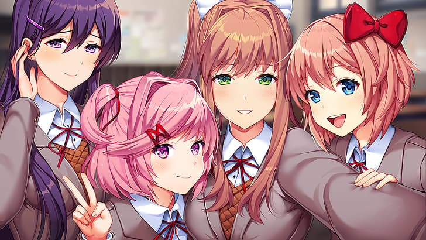
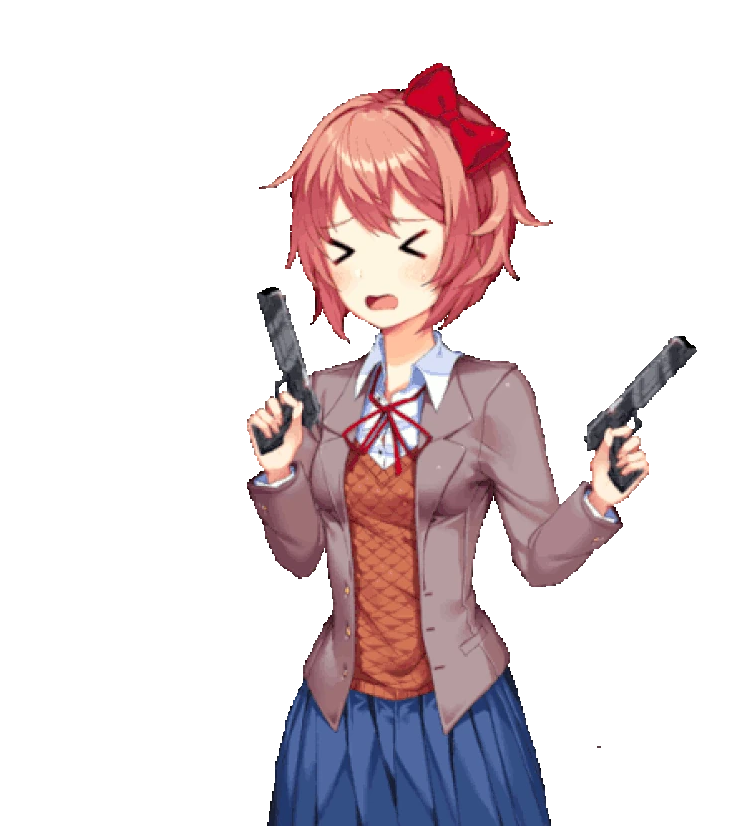

doki doki literature club is een visual novel spelletje uit 2017, 22 September, het gaat over 4 karakters Yuri, Monika, Natsuki en Sayori, en de MC, in het begin gaat het alleen over elkaar leren kennen gedichten schrijven, maar als je het verhaal volgt krijg je te maken met heftige topics zoals mental health en depressie
In het begin ziet het spel er gewoon normaal uit maar na verloop van tijd verandert, het spel wordt dan een psychologische horror te zijn, 1 van de personages Monika wordt uiteindelijk zelfbewust wat leidt tot verontrustende en soms angstaanjagende gebeurtenissen, het spel breekt hierbij de vierde muur. wat betekent dat Monika zich bewust is van de speler en de spel zelf. Dit contrast tussen een vrolijke dating-sim en een diep verontrustende horroservaring maakt het spel uniek en geliefd binnen de gaming-community
